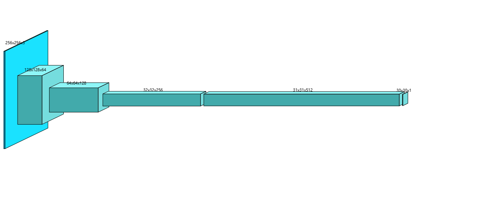
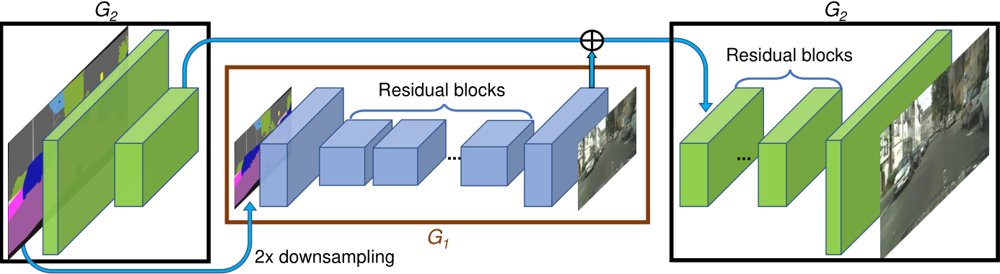
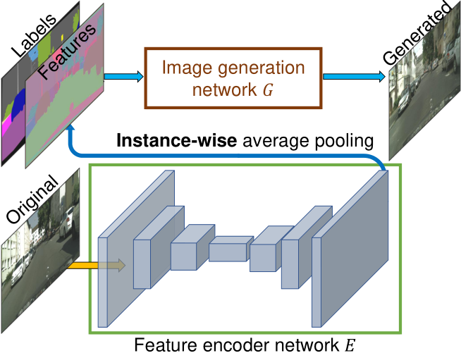

PatchGAN 到 Multi-Scale PatchGAN
Image-to-Image Translation with Conditional Adversarial Networks
Isola P , Zhu J Y , Zhou T ,et al.Image-to-Image Translation with Conditional Adversarial Networks[C]//IEEE Conference on Computer Vision & Pattern Recognition.IEEE, 2016.DOI:10.1109/CVPR.2017.632.
High-Resolution Image Synthesis and Semantic Manipulation with Conditional GANs
Wang T C , Liu M Y , Zhu J Y ,et al.High-Resolution Image Synthesis and Semantic Manipulation with Conditional GANs[J]. 2017.DOI:10.48550/arXiv.1711.11585.
基础 PatchGAN
来自《Image-to-Image Translation with Conditional Adversarial Networks》（Phillip Isola 等，CVPR 2017，即 pix2pix）
PatchGAN 原理
PatchGAN 的判别器不再对整张图像进行全局真伪判断，而是将输入图像分割为多个局部小块（Patch），每个 Patch 独立判断真伪，最终取所有 Patch 的平均结果作为整体判别输出。
- 判别器通过多层卷积操作，逐步下采样输入图像，最终输出一个 N×N 的特征图。
- 每个特征图上的点对应输入图像的一个局部块，用于判断该局部区域是否真实。
卷积参数
卷积参数：
- 卷积核大小：4 × 4，步长（stride）= 2，填充（padding）= 1。
- 归一化层：使用
BatchNorm2d或InstanceNorm2d（根据输入条件）。 - 激活函数：LeakyReLU（负斜率为 0.2）。
- 输出层：最后一层卷积输出 1 通道的特征图，通过 Sigmoid 函数得到每个局部块的真假概率。
PatchGAN 感受野
每层卷积的感受野大小可通过公式递推计算：
$$ R_{n} = R_{n-1} + (k_n - 1) \times \prod_{i=1}^{n-1} s_i $$其中 $k_n$ 为第 $n$ 层卷积核大小，$s_i$ 为第 $i$ 层步长。
以一个简单的三层卷积网络为例，来展示如何计算每个输出单元对应的输入图像的局部感受野大小。假设网络参数如下：
输入的单个像素的感受野 $R_0 = 1$。
第一层卷积：卷积核大小 $k_1 = 4$，步长 $s_1 = 2$。
$R_1 = R_0 + (k_1 - 1) \times \prod_{i=1}^{0} s_i = 1+(4-1)\times 1 = 1 + 3 = 4$。
这表示第一层中，每个神经元对应输入图像上的 $4 \times 4$ 区域。第二层卷积：卷积核大小 $k_2 = 4 $，步长 $s_2 = 2$，前一层步长的累计乘积为 $s_1 = 2$。
$R_2 = R_1 + (k_2 - 1) \times s_1 = 4 + 3 \times 2 = 4 + 6 = 10$
说明第二层的每个神经元对应输入图像上的 $10 \times 10$ 区域。第三层卷积：卷积核大小 $k_3 = 4$，步长 $s_3 = 1$，前两层步长的累计乘积为 $s_1 \times s_2 = 2 \times 2 = 4$。
$R_3 = R_2 + (k_3 - 1) \times (s_1 \times s_2) = 10 + 3 \times 4 = 10 + 12 = 22$
说明第三层中，每个神经元的感受野大小为 $22 \times 22$ 像素。
这个例子说明，通过逐层计算，最终网络的最后一层中的每个判别器输出单元实际上“看到了”输入图像上的一个 $22 \times 22$ 的局部区域。PatchGAN 的设计思想就是利用这样的局部感受野，使得判别器能够专注于图像中细小局部区域的真实感，从而更有效地区分真实图像和生成图像。
PatchGAN 感受野计算原理
局部连接与覆盖范围：
- 每个卷积核具有固定大小 $k$，它在输入图像上滑动时，每次都会覆盖 $k$ 个像素（在一维情况中，二维类似）。
- 第一个卷积层中，每个神经元直接看到大小为 $k$ 的区域。如果我们把输入的单个像素的感受野记为 $R_0 = 1$，那么第一层每个神经元的感受野就是：$R_1 = 1 + (k_1 - 1)$。这里的 $(k_1 - 1)$ 代表了额外扩展的部分（因为中心像素已经在 $R_0$ 内）。
步长的影响：
- 当卷积层使用步长 $s$ 时，输出特征图的每个神经元在输入上移动的间隔不再是 1，而是 $s$。这意味着，后续层的卷积操作相当于在上一层感受野的基础上，以 $s$ 的“倍率”去扩展。
- 例如，第二层卷积时，假设核大小为 $k_2$ 和步长 $s_2$，它增加的感受野大小不是直接的 $k_2 - 1$，而是乘上了上一层的步长 $s_1$（因为上一层的每个步长移动在原始输入上代表了 $s_1$ 个像素）：$R_2 = R_1 + (k_2 - 1) \times s_1$
层层叠加：
- 当网络层数增多时，每一层的卷积操作都在前一层的基础上进一步扩展感受野，而且这种扩展会受前面所有层步长的累计影响。
- 所以对于第 $l$ 层，用前面所有层的步长乘积来缩放当前层的扩展量：$R_l = R_{l-1} + (k_l - 1) \times \prod_{i=1}^{l-1} s_i$，其中：
- $R_{l-1}$ 是上一层的感受野；
- $(k_l - 1)$ 是当前层除中心外能“看到”的额外像素数量；
- $\prod_{i=1}^{l-1} s_i$ 则是前面所有层步长的累乘，表明每一层的位移在原始输入上对应的像素数。
直观地说，每一层卷积操作会在原有感受野的基础上“增加”一圈额外的像素，这一圈的宽度为 $k - 1$（不考虑步长时），而实际增加的像素数量会因为前面层的步长而被放大。于是就得到了上述递归公式，用来精确计算任意层的感受野。
论文中的 PatchGAN
class NLayerDiscriminator(nn.Module):
"""Defines a PatchGAN discriminator"""
def __init__(self, input_nc, ndf=64, n_layers=3, norm_layer=nn.BatchNorm2d):
"""
Parameters:
input_nc (int) -- 输入图像的通道数
ndf (int) -- 最后一个转换层中卷积核的数量
n_layers (int) -- 判别器中的转换层数
norm_layer -- 归一化层
"""
super(NLayerDiscriminator, self).__init__()
if type(norm_layer) == functools.partial:
# 不需要使用偏差，因为BatchNorm2d有仿射参数
use_bias = norm_layer.func == nn.InstanceNorm2d
else:
use_bias = norm_layer == nn.InstanceNorm2d
kw = 4
padw = 1
sequence = [nn.Conv2d(input_nc, ndf, kernel_size=kw,
stride=2, padding=padw), nn.LeakyReLU(0.2, True)]
nf_mult = 1
nf_mult_prev = 1
for n in range(1, n_layers): # 逐渐增加过滤器的数量
nf_mult_prev = nf_mult
nf_mult = min(2 ** n, 8)
sequence += [
nn.Conv2d(ndf * nf_mult_prev, ndf * nf_mult, kernel_size=kw,
stride=2, padding=padw, bias=use_bias),
norm_layer(ndf * nf_mult),
nn.LeakyReLU(0.2, True)
]
nf_mult_prev = nf_mult
nf_mult = min(2 ** n_layers, 8)
sequence += [
nn.Conv2d(ndf * nf_mult_prev, ndf * nf_mult, kernel_size=kw,
stride=1, padding=padw, bias=use_bias),
norm_layer(ndf * nf_mult),
nn.LeakyReLU(0.2, True)
]
sequence += [nn.Conv2d(ndf * nf_mult, 1, kernel_size=kw,
stride=1, padding=padw)] # 输出 1 通道预测图
self.model = nn.Sequential(*sequence)
def forward(self, input):
"""Standard forward."""
return self.model(input)
这个 PatchGAN 判别器总共包含 5 个卷积层，其参数分别为：
padding=1
| 层级 | 卷积核大小 | 步长 | 通道 | 效果 |
|---|---|---|---|---|
| 第一层 | 4 | 2 | input_nc → ndf | 下采样 |
| 第二层（第一次迭代） | 4 | 2 | ndf → 2 * ndf | 下采样 |
| 第三层（第二次迭代） | 4 | 2 | 2 * ndf → 4 * ndf | 下采样 |
| 第四层（循环结束后） | 4 | 1 | 4 * ndf → 8 * ndf | 尺寸不变 |
| 第五层 | 4 | 1 | 8 * ndf → 1 | 每个位置对应一个局部区域的真实性概率 |
假设输入图像为 256×256，那么按照代码中的卷积参数（核尺寸 4，padding = 1）以及各层的步幅，特征图在每一层的尺寸变化如下：
$$ \text{output size} = \left\lfloor\frac{256+2\times1-4}{2}\right\rfloor + 1 = 128 $$
- 第一层卷积（Conv2d(input_nc, 64, kernel_size=4, stride=2, padding=1)），输入尺寸 256×256，输出特征图大小为 128×128，通道数为 64。
$$ \text{output size} = \left\lfloor\frac{128+2-4}{2}\right\rfloor + 1 = 64 $$
- 第二层卷积（第一个 for 循环迭代 n=1，对应 Conv2d(64, 128, kernel_size=4, stride=2, padding=1)），输入尺寸 128×128，输出大小 64×64，通道数由 64 增加到 128。
$$ \text{output size} = \left\lfloor\frac{64+2-4}{2}\right\rfloor + 1 = 32 $$
- 第三层卷积（for 循环中 n=2，对应 Conv2d(128, 256, kernel_size=4, stride=2, padding=1)），输入尺寸 64×64，输出大小 32×32，通道数由 128 增加到 256。
$$ \text{output size} = \left\lfloor\frac{32+2-4}{1}\right\rfloor + 1 = 31 $$
- 第四层卷积（循环外的第一层卷积，Conv2d(256, 512, kernel_size=4, stride=1, padding=1)），此层不再下采样，输入尺寸 32×32，输出大小为 31×31，通道数从 256 变为 512。
$$ \text{output size} = \left\lfloor\frac{31+2-4}{1}\right\rfloor + 1 = 30 $$
- 第五层卷积（最后一层，Conv2d(512, 1, kernel_size=4, stride=1, padding=1)），输入尺寸 31×31，最终输出特征图大小为 30×30，且通道数为 1，对应每个位置的 Patch 判别结果。
示意图如下（输入 [256, 256, 3]）：

感受野逐层计算如下：
$$ R_{n} = R_{n-1} + (k_n - 1) \times \prod_{i=1}^{n-1} s_i $$| 层级 | 参数 | 跳跃（前面各层步长的乘积） | 感受野 |
|---|---|---|---|
| 1 | $k_1 = 4$，$s_1 = 2$ | $j_0 = 1$ | $R_1 = 1 + (4 - 1) \times 1 = 1 + 3 = 4$ |
| 2 | $k_2 = 4$，$s_2 = 2$ | $j_1 = j_0 \times s_1$ $= 1 \times 2 = 2$ | $R_2 = R_1 + (4 - 1) \times j_1$ $= 4 + 3 \times 2 = 4 + 6 = 10$ |
| 3 | $k_3 = 4$，$s_3 = 2$ | $j_2 = j_1 \times s_2$ $= 2 \times 2 = 4$ | $R_3 = R_2 + (4 - 1) \times j_2$ $= 10 + 3 \times 4 = 10 + 12 = 22$ |
| 4 | $k_4 = 4$，$s_4 = 1$ | $j_3 = j_2 \times s_3$ $= 4 \times 2 = 8$ | $R_4 = R_3 + (4 - 1) \times j_3$ $= 22 + 3 \times 8 = 22 + 24 = 46$ |
| 5 | $k_5 = 4$，$s_5 = 1$ | $j_4 = j_3 \times s_4$ $= 8 \times 1 = 8$ | $R_5 = R_4 + (4 - 1) \times j_4$ $= 46 + 3 \times 8 = 46 + 24 = 70$ |
因此，最终判别器输出的每个单元的感受野为 70×70 像素。
3 级金字塔判别器（Multi-Scale PatchGAN）
来自《High-Resolution Image Synthesis and Semantic Manipulation with Conditional GANs》（Ting-Chun Wang 等，CVPR 2018，即 pix2pixHD）
解决了两个主要问题：
- 使用 GAN 生成高分辨率图像的困难；
- 先前高分辨率结果中缺乏细节和逼真的纹理。
Coarse-to-Fine Generator
《High-Resolution Image Synthesis and Semantic Manipulation with cGANs》生成器部分
将生成器分解为两个子网：$G_1$ 和 $G_2$。生成器 $G =\{G_1, G_2\}$。
- $G_1$ 为全局生成器网络；
- $G_2$ 为局部增强器网络。
全局生成器网络以 1024 × 512 的分辨率运行，局部增强器网络输出的图像分辨率是前一个图像输出大小的 4 倍（每个图像维度，长、宽为 2 倍）。
- 例如，生成器 $G =\{G_1, G_2\}$ 的输出图像分辨率为 2048 × 1024，$G =\{G_1, G_2, G_3\}$ 的输出图像分辨率为 4096 × 2048。

全局生成器由 一个前端卷积 $G_1^{(F)}$、一组残差块 $G_1^{(R)}$ 和 一个后端转置卷积 $G_1^{(B)}$ 组成。
- 分辨率为 1024 × 512 的语义标签图依次通过上面 3 个组件，以输出分辨率为 1024 × 512 的图像。
局部增强器由 一个前端卷积 $G_2^{(F)}$、一组残差块 $G_2^{(R)}$ 和 一个后端转置卷积 $G_2^{(B)}$ 组成。
- $G_2$ 的输入标签映射的分辨率为 2048 × 1024。
- 残差块 $G_2^{(R)}$ 的输入是 $G_2^{(F)}$ 的输出特征图和全局生成器网络 $G_1^{(B)}$ 后端的最后一个特征图的总和。这有助于将全局信息从 $G_1$ 集成到 $G_2$ 中。
在训练过程中，首先训练全局生成器，接着按照它们的分辨率顺序训练局部增强器，然后一起微调所有的网络。
全局生成器代码
class GlobalGenerator(nn.Module):
def __init__(self, input_nc, output_nc, ngf=64, n_downsampling=3,
n_blocks=9, norm_layer=nn.BatchNorm2d,
padding_type='reflect'):
input_nc：输入通道数（如语义标签图的通道数）。
output_nc：输出通道数（如生成图像的 RGB 通道数 3）。
ngf：生成器的基础特征通道数（默认 64）。
n_downsampling：下采样次数（默认 3 次，特征图尺寸缩小为输入的 1/8）。
n_blocks：残差块数量（默认 9 个）。
norm_layer：归一化层（默认批量归一化 BatchNorm2d）。
padding_type：填充类型（默认反射填充 ReflectionPad2d，减少边缘伪影）。
activation = nn.ReLU(True)
model = [
nn.ReflectionPad2d(3),
nn.Conv2d(input_nc, ngf, kernel_size=7, padding=0),
norm_layer(ngf),
activation
]
反射填充和卷积层提取初始特征：
(input_nc, H, W) -> (ngf, H, W)。
for i in range(n_downsampling):
mult = 2**i
model += [
nn.Conv2d(ngf * mult, ngf * mult * 2, kernel_size=3,
stride=2, padding=1),
norm_layer(ngf * mult * 2),
activation
]
下采样：每次通道数翻倍，特征图尺寸缩小为 1/2。
mult = 2**n_downsampling
for i in range(n_blocks):
model += [
ResnetBlock(ngf * mult, padding_type=padding_type,
activation=activation,
norm_layer=norm_layer)
]
残差块，保持特征图尺寸不变，通过跳跃连接缓解梯度消失。
通道数固定为ngf * 2^n_downsampling。
for i in range(n_downsampling):
mult = 2**(n_downsampling - i)
model += [
nn.ConvTranspose2d(ngf * mult, int(ngf * mult / 2),
kernel_size=3, stride=2, padding=1,
output_padding=1),
norm_layer(int(ngf * mult / 2)), activation
]
上采样：逐步恢复空间分辨率并减少通道数。
每次通道数减半，特征图尺寸增加为 2 倍
model += [
nn.ReflectionPad2d(3),
nn.Conv2d(ngf, output_nc, kernel_size=7, padding=0),
nn.Tanh()
]
self.model = nn.Sequential(*model)
反射填充和卷积层将通道数映射到 output_nc，并使用 Tanh 激活
局部增强器
class LocalEnhancer(nn.Module):
def __init__(self, input_nc, output_nc, ngf=32, n_downsample_global=3,
n_blocks_global=9, n_local_enhancers=1, n_blocks_local=3,
norm_layer=nn.BatchNorm2d, padding_type='reflect'):
super(LocalEnhancer, self).__init__()
self.n_local_enhancers = n_local_enhancers
input_nc：输入通道数（如语义标签图的通道数）。
output_nc：输出通道数（如RGB图像的3通道）。
ngf：基础特征通道数（默认 32）。
n_downsample_global：全局生成器的下采样次数（默认 3 次）。
n_blocks_global：全局生成器的残差块数量（默认 9 个）。
n_local_enhancers：局部增强器的数量（默认 1 个）。
n_blocks_local：每个局部增强器的残差块数量（默认 3 个）。
norm_layer：归一化层（默认批量归一化 BatchNorm2d）。
padding_type：填充类型（默认反射填充 ReflectionPad2d）。
# 全局生成器模型
ngf_global = ngf * (2**n_local_enhancers)
model_global = GlobalGenerator(input_nc, output_nc, ngf_global,
n_downsample_global, n_blocks_global,
norm_layer).model
# 去掉最后的卷积层
model_global = [model_global[i] for i in range(len(model_global)-3)]
self.model = nn.Sequential(*model_global)
生成低分辨率基础图象（如 1024 * 512）。
截断全局生成器的最后 3 层（如最终卷积层），保留编码器和残差块部分。
特征通道：ngf_global = ngf * 2^n_local_enhancers（如n_local_enhancers=1时，ngf_global=64）。
# 局部增强层
for n in range(1, n_local_enhancers+1):
# 下采样分支
ngf_global = ngf * (2**(n_local_enhancers-n))
model_downsample = [
# 1
nn.ReflectionPad2d(3),
nn.Conv2d(input_nc, ngf_global, kernel_size=7, padding=0),
norm_layer(ngf_global),
nn.ReLU(True),
# 2
nn.Conv2d(ngf_global, ngf_global * 2,
kernel_size=3, stride=2, padding=1),
norm_layer(ngf_global * 2),
nn.ReLU(True)
]
- 反射填充 → 卷积（7×7，步长 1） → 归一化 → ReLU。
- 卷积（3×3，步长 2） → 归一化 → ReLU（通道数翻倍）。
# 残差块
model_upsample = []
for i in range(n_blocks_local):
model_upsample += [
ResnetBlock(ngf_global * 2, padding_type=padding_type,
norm_layer=norm_layer)
]
n_blocks_local个残差块（默认3个），保持特征图尺寸不变。
# 上采样分支
model_upsample += [
nn.ConvTranspose2d(ngf_global * 2, ngf_global,
kernel_size=3, stride=2,
padding=1, output_padding=1),
norm_layer(ngf_global),
nn.ReLU(True)
]
转置卷积（3×3，步长2） → 归一化 → ReLU（通道数减半）。
# 最终输出层
if n == n_local_enhancers:
model_upsample += [
nn.ReflectionPad2d(3),
nn.Conv2d(ngf, output_nc, kernel_size=7, padding=0),
nn.Tanh()
]
反射填充 → 卷积（7×7） → Tanh 激活函数。
setattr(self, 'model'+str(n)+'_1', nn.Sequential(*model_downsample))
setattr(self, 'model'+str(n)+'_2', nn.Sequential(*model_upsample))
self.downsample = nn.AvgPool2d(3, stride=2, padding=[1, 1],
count_include_pad=False)
使用平均池化（AvgPool2d）逐步下采样输入，生成多尺度输入金字塔。
例如，若n_local_enhancers=2，则输入金字塔包含原始输入、1/2 分辨率、1/4 分辨率。
def forward(self, input):
# 构建输入金字塔
input_downsampled = [input]
for i in range(self.n_local_enhancers):
input_downsampled.append(self.downsample(input_downsampled[-1]))
原始输入逐步下采样，生成
n_local_enhancers+1个不同尺度的输入。
# output at coarest level
output_prev = self.model(input_downsampled[-1])
将输入金字塔中最低分辨率的图像输入全局生成器，得到基础特征。
for n_local_enhancers in range(1, self.n_local_enhancers+1):
model_downsample = getattr(self,
'model'+str(n_local_enhancers)+'_1')
model_upsample = getattr(self,
'model'+str(n_local_enhancers)+'_2')
input_i = input_downsampled[self.n_local_enhancers-n_local_enhancers]
output_prev = model_upsample(model_downsample(input_i) + output_prev)
return output_prev
从最粗糙尺度开始，依次通过下采样分支提取局部特征。
将局部特征与上一层的输出相加（特征融合），再通过残差块和上采样。
最后一层输出最终高分辨率图像（如 2048×1024）。
Multi-Scale PatchGAN
《High-Resolution Image Synthesis and Semantic Manipulation with cGANs》判别器部分
为了区分高分辨率的真实图像和合成图像，鉴别器需要有一个大的接受野。
通过图像金字塔构建多尺度判别器，包含 3 个不同分辨率的判别器，它们具有相同的网络结构：
- 原始分辨率图像（如 1024×1024）。
- 下采样 1/2 的图像（如 512×512）。
- 下采样 1/4 的图像（如 256×256）。
每个判别器均为 PatchGAN 结构，但感受野随分辨率变化，分别捕捉 局部细节（高分辨率）、中等结构（中分辨率）和 全局布局（低分辨率）。
- 最粗糙的尺度上工作的鉴别器具有最大的接受域。它具有更全局的图像视图，可以引导生成器生成全局一致的图像。
- 最精细的尺度上的鉴别器鼓励生成器产生更精细的细节。
这也使得训练从粗到精的生成器更容易，因为将低分辨率模型扩展到更高分辨率只需要在最精细的级别添加鉴别器，而不是从头开始重新训练。在没有多尺度鉴别器的情况下，我们观察到生成的图像中经常出现许多重复的图案。
因此，原来的最大最小博弈变成：
$$ \min_G \max_{D_1,D_2,D_3}\sum_{k=1,2,3}\mathcal{L}_{GAN}(G, D_k) $$判别器代码
class MultiscaleDiscriminator(nn.Module):
def __init__(self, input_nc, ndf=64, n_layers=3,
norm_layer=nn.BatchNorm2d, use_sigmoid=False,
num_D=3, getIntermFeat=False):
super(MultiscaleDiscriminator, self).__init__()
self.num_D = num_D
self.n_layers = n_layers
self.getIntermFeat = getIntermFeat
input_nc：输入图像的通道数（如 RGB 图像为 3）。
ndf：基础特征通道数（默认 64）。
n_layers：每个判别器的卷积层数（默认 3）。
norm_layer：归一化层（默认批量归一化 BatchNorm2d）。
use_sigmoid：是否在输出层使用 Sigmoid 激活函数（默认否）。
num_D：判别器的数量（默认 3 个，对应 3 个不同尺度）。
getIntermFeat：是否返回中间层特征（默认否，仅返回最终输出）。
for i in range(num_D):
netD = NLayerDiscriminator(input_nc, ndf, n_layers, norm_layer,
use_sigmoid, getIntermFeat)
if getIntermFeat:
for j in range(n_layers+2):
setattr(self, 'scale'+str(i)+'_layer'+str(j),
getattr(netD, 'model'+str(j)))
else:
setattr(self, 'layer'+str(i), netD.model)
self.downsample = nn.AvgPool2d(3, stride=2, padding=[1, 1],
count_include_pad=False)
- 构建多尺度判别器：循环创建
num_D个判别器（每个对应一个尺度）
- 每个判别器是
NLayerDiscriminator（PatchGAN 的判别器） 的实例，其核心结构为多层卷积。- 若
getIntermFeat=True：将每个判别器的每一层单独注册为属性（如scale0_layer0，scale0_layer1），以便提取中间特征。- 若
getIntermFeat=False：直接将整个判别器模型注册为属性（如layer0，layer1）。
- 下采样：使用平均池化（AvgPool2d）对输入图像进行下采样，生成多尺度输入金字塔。池化核大小 3×3，步长 2，padding=1，逐步将图像分辨率减半。
def singleD_forward(self, model, input):
if self.getIntermFeat:
result = [input]
for i in range(len(model)):
result.append(model[i](result[-1]))
return result[1:]
else:
return [model(input)]
def forward(self, input):
num_D = self.num_D
result = []
input_downsampled = input
for i in range(num_D):
if self.getIntermFeat:
model = [getattr(self,'scale'+str(num_D-1-i)+'_layer'+str(j))
for j in range(self.n_layers+2)]
else:
model = getattr(self, 'layer'+str(num_D-1-i))
result.append(self.singleD_forward(model, input_downsampled))
if i != (num_D-1):
input_downsampled = self.downsample(input_downsampled)
return result
原始输入图像通过逐层下采样生成
num_D个不同尺度的图像。例如，若num_D=3，则生成原始分辨率、1/2 分辨率、1/4 分辨率三个尺度。
最粗糙尺度（最低分辨率）开始，依次用对应尺度的判别器处理输入。
- 若
getIntermFeat=True：提取每个判别器各层的中间特征。- 若
getIntermFeat=False：仅返回每个判别器的最终输出。所有判别器的输出（或中间特征）被收集到
result列表中并返回。
改进后的对抗损失
判别器目标：最大化此损失以区分真实图像 $x$ 与生成图像 $G(s)$。
生成器目标：最小化此损失以生成能欺骗判别器的图像。
从多层鉴别器中提取特征，并从真实图像和合成图像中学习匹配这些中间表示。提出特征匹配损失 $\mathcal{L}_{FM}(G, D_k)$ 计算为：
$$ \mathcal{L}_{FM}(G, D_k)=\mathbb{E}_{\text{s}, \text{x}} \sum_{i=1}^T \frac {1}{N_i}[\vert\vert D_k^{(i)}(\text{s}, \text{x}) - D_k^{(i)}(\text{s}, G(\text{s}))\vert\vert _1] $$- $D_k^{(i)}$：鉴别器 $D_k$ 的第 $i$ 层特征提取器。
- $\text{s}$：输入的语义标签图，每个像素值表示对应物体的类别。
- $\text{x}$：输入的真实图像，与语义标签图对应，用于监督。
- $T$：总层数。
- $N_i$：每层中元素的数量。
- L1 范数：计算真实与生成图像在每层特征上的平均差异。
将 GAN 损失和特征匹配损失结合起来，最终的对抗损失为：
$$ \min_G \left(\left( \max_{\text{D}_1,\text{D}_2,\text{D}_3} \sum_{k=1,2,3}\mathcal{L}_{GAN}(G, \text{D}_k) \right) + \lambda \sum_{k=1,2,3}\mathcal{L}_{FM}(G, \text{D}_k) \right) $$其中，$\lambda$ 控制两项的重要性。
- 注意，对于特征匹配损失 $\mathcal{L}_{FM}$，$D_k$ 仅作为特征提取器，不会最大化损失 $\mathcal{L}_{FM}$。
实例级特征
实例边界图
传统的语义标签仅标注像素类别（如“车辆”“行人”），但无法区分同类对象的不同实例（如相邻的两辆车）。所以导致生成图像中同类相邻对象的边界模糊，例如并排的车辆可能被错误地合并成一块区域。
考虑实例边界图（Instance Boundary Map）：解决语义标签无法区分同类相邻对象的问题（如并排的车辆），显著提升对象边界的清晰度。
- 每个对象实例具有唯一 ID。
- 若某像素的实例 ID 与其 4 邻域像素不同，则标记为边界（值为1），否则为 0。
实例边界图的输入设计：
- 生成器输入：将语义标签图（one-hot编码）与实例边界图拼接（通道维度），作为生成器的输入。
- 判别器输入：将语义标签图、实例边界图和真实/生成图像拼接，供判别器区分真假。
实例级特征嵌入
传统方法（如 pix2pix）从语义标签到图像的映射是确定性的（一对一），无法生成多样化的结果。
为了生成不同的图像并允许实例级控制，添加额外的低维特征通道作为生成器网络的输入。论文表明，通过操纵这些特征，可以对图像合成过程进行灵活的控制。此外，由于特征通道是连续的量，提出的模型原则上能够生成无限多的图像。
为了生成低维特征，训练一个编码器网络来为图像中的每个实例找到一个对应于地面真实目标的低维特征向量。编码器网络设计：
- 架构层面上：编码器网络（E）采用标准的编码器-解码器结构，输入为真实图像（x），输出为每个实例的低维特征向量。
- 特征一致性：通过实例级平均池化（instance-wise average pooling），将同一实例内所有像素的特征取平均，确保实例内部特征一致。

使用 $G(\text{s}, E(\text{x}))$ 替换 $G(\text{s})$：
$$ \min_{G,E} \left(\left( \max_{\text{D}_1,\text{D}_2,\text{D}_3} \sum_{k=1,2,3}\mathcal{L}_{GAN}(G(\text{s}, E(\text{x})), \text{D}_k) \right) + \lambda \sum_{k=1,2,3}\mathcal{L}_{FM}(G(\text{s}, E(\text{x})), \text{D}_k) \right) $$训练时采用联合训练，编码器与生成器和鉴别器共同训练。
编码器训练完成后，在训练图像中的所有实例上运行编码器，并记录得到的特征。然后对每个语义类别的这些特征执行 K-means 聚类。因此，每个簇对特定样式的特征进行编码，例如，道路的沥青或鹅卵石纹理。在推理时，随机选取一个聚类中心作为编码特征。
生成器的输入扩展为语义标签图 + 实例边界图 + 编码器提取的特征，即 $G(\text{s},E(\text{x}))$。
编码器代码
pix2pixHD/models/pix2pixHD_model.py
def encode_input(self, label_map, inst_map=None, real_image=None,
feat_map=None, infer=False):
if self.opt.label_nc == 0:
input_label = label_map.data.cuda()
else:
# 为标签图创建 one-hot 向量
size = label_map.size()
oneHot_size = (size[0], self.opt.label_nc, size[2], size[3])
input_label = torch.cuda.FloatTensor(
torch.Size(oneHot_size)
).zero_()
input_label = input_label.scatter_(1,
label_map.data.long().cuda(),
1.0)
if self.opt.data_type == 16:
input_label = input_label.half()
# 通过 get_edges 方法检测实例 ID 的边界，生成二值边缘图（edge_map）
if not self.opt.no_instance:
inst_map = inst_map.data.cuda()
edge_map = self.get_edges(inst_map)
input_label = torch.cat((input_label, edge_map), dim=1)
input_label = Variable(input_label, volatile=infer)
# real images for training / 真实图像用于训练
if real_image is not None:
real_image = Variable(real_image.data.cuda())
# instance map for feature encoding / 实例图用于特征编码
if self.use_features:
# 获取预先计算的特征图
if self.opt.load_features:
feat_map = Variable(feat_map.data.cuda())
if self.opt.label_feat:
inst_map = label_map.cuda()
return input_label, inst_map, real_image, feat_map
论文实验结果
实验数据集：
- Cityscapes：城市场景数据集（2048×1024分辨率），包含2975张训练图像和500张测试图像。
- NYU Indoor：室内场景数据集（561×427分辨率），1200张训练图像，249张测试图像。
- ADE20K：通用场景数据集（图像宽度统一为512），20210张训练图像，2000张测试图像。
- Helen Face：人脸数据集（1024×1024分辨率），2000张训练图像，330张测试图像。
实验参数：
- LSGANs：最小二乘 GAN。
- $\lambda=10$。
- K-Means 中 $K=10$。
- 每个实例特征用 3 维向量编码。
尝试在目标中添加感知损失：
$$ \lambda \sum_{i=1}^N \frac{1}{M_i} \left[ \vert\vert F^{(i)}(\text{x}) - F^{(i)}(G(\text{s})) \vert\vert _1 \right] $$- $\lambda=10$。
- $F^{(i)}$：VGG 中有 $M_i$ 个元素的第 $i$ 层。
感知损失可以作为变量进行对照试验。
- Ours(w/o VGG loss): 不使用 VGG 感知损失。
- Ours(w/ VGG loss): 使用了 VGG 感知损失来优化生成图像的感知质量。
定量评估
为了量化结果的质量，对合成图像进行语义分割，并比较预测片段与输入的匹配程度。
如果可以生成与输入标签图相对应的真实图像，现成的语义分割模型（例如，使用的 PSPNet）应该能够预测真实标签。
评估指标：
- 像素准确率（Pixel Accuracy）：生成图像与真实图像在像素级别的一致性。
- 平均交并比（Mean IoU）：衡量生成图像中对象区域与真实标注的重合度。
- 人类偏好率（Human Preference Rate）：通过Amazon Mechanical Turk（AMT）平台进行 A/B 测试，统计用户对生成图像的偏好比例。
结果对比
- Cityscapes数据集：
- 像素准确率：本文方法达到 83.78%，显著优于 pix2pix（78.34%）和 CRN（70.55%）。
- 平均 IoU：本文方法为 0.6389，远高于 pix2pix（0.3948）和 CRN（0.3483），接近真实图像（Oracle：0.6857）。
- 结论：本文方法在保持高分辨率的同时，显著提升了语义一致性。
- NYU Indoor数据集：
- 在AMT测试中，本文方法以 86.7% 的偏好率优于 pix2pix，以 63.7% 优于 CRN（图8）。
- 生成图像色彩更丰富，细节更真实（如家具纹理、灯光反射）。
人类主观研究
任务类型分为：
- 无时间限制（Unlimited Time）：用户同时观看两幅生成图像（不同方法），选择更自然的结果。
- 有限时间（Limited Time）：图像展示时间随机（1/8秒至8秒），测试快速感知差异。
实验结果如下：
- 无时间限制测试：
- 对比 pix2pix：93.8% 用户偏好本文结果；对比 CRN：86.2% 用户偏好本文结果。
- 即使不使用 VGG 感知损失（仅对抗训练），本文方法仍以 94.6% 和 85.2% 的偏好率领先。
- 有限时间测试：
- 随着展示时间延长，用户更易区分本文方法与 CRN 的差异（如细节纹理、边界清晰度）。
- 在极短时间（1/8秒）内，本文方法仍以显著优势被选中，证明其生成的全局一致性更优。
消融实验：
- 损失函数分析：
- 仅用 GAN 损失：偏好率 58.90%。
- GAN + 特征匹配损失：偏好率提升至 68.55%。
- 加入 VGG 感知损失：进一步提升细节质量，但非必需。
- 实例边界图的影：
- 用户对车辆边界的偏好率为 64.34%，证明实例信息显著提升边界真实性。
生成结果可视化
场景合成：
- Cityscapes：
- 车辆、树木、建筑等对象的细节（如车窗反射、树叶纹理）更接近真实照片。
- CRN 生成结果模糊且重复（如车轮形状不清晰），而本文方法避免了此类问题。
- ADE20K：
- 复杂室内外场景（如厨房、街道）的生成质量与真实图像接近，尤其在光照和材质表现上。
多样化生成与交互编辑：
- 人脸编辑：
- 通过修改实例特征（如肤色、发型、妆容），实时生成多样化人脸（如添加胡须、调整唇色）。
- 用户可基于语义标签（如“眼睛”“嘴巴”）进行局部调整。
- 边缘转照片：
- 输入边缘图（如人脸轮廓、猫的草图），生成高分辨率自然图像（如逼真肖像、猫的毛发细节）。
论文代码分析
Pix2PixHDModel.forward()
def forward(self, label, inst, image, feat, infer=False):
input_label, inst_map, real_image, feat_map =
self.encode_input(label, inst, image, feat)
将输入的标签、实例图、真实图像和特征图进行编码
# 生成假的图像
if self.use_features:
if not self.opt.load_features:
feat_map = self.netE.forward(real_image, inst_map)
input_concat = torch.cat((input_label, feat_map), dim=1)
else:
input_concat = input_label
fake_image = self.netG.forward(input_concat)
- 如果启用实例特征：若未加载预存特征（
load_features=False），通过编码器netE从真实图像提取特征feat_map。将语义标签input_label和特征图feat_map沿通道维度拼接（dim=1）。- 如果不使用特征，则直接以语义标签
input_label为输入。生成器
netG根据输入生成假图像fake_image。
# Fake Detection and Loss
pred_fake_pool = self.discriminate(input_label, fake_image,
use_pool=True)
loss_D_fake = self.criterionGAN(pred_fake_pool, False)
# Real Detection and Loss
pred_real = self.discriminate(input_label, real_image)
loss_D_real = self.criterionGAN(pred_real, True)
# GAN loss (Fake Passability Loss)
pred_fake = self.netD.forward(torch.cat((input_label, fake_image),
dim=1))
loss_G_GAN = self.criterionGAN(pred_fake, True)
- 通过
discriminate方法检测假图像fake_image的真实性，并计算假图像的对抗损失loss_D_fake。- 类似地计算真实图像的对抗损失
loss_D_real。- 直接通过判别器对假图像的输出
pred_fake计算假图像的对抗损失loss_G_GAN，生成器需要欺骗判别器。
# GAN 特征匹配损失
loss_G_GAN_Feat = 0
if not self.opt.no_ganFeat_loss:
feat_weights = 4.0 / (self.opt.n_layers_D + 1)
D_weights = 1.0 / self.opt.num_D
for i in range(self.opt.num_D):
for j in range(len(pred_fake[i])-1):
loss_G_GAN_Feat += D_weights * feat_weights * \
self.criterionFeat(pred_fake[i][j], pred_real[i][j].detach()) * self.opt.lambda_feat
遍历每个判别器及其各层，对生成图像和真实图像在判别器各层的特征图计算 L1 损失。
通过feat_weights（层权重）和D_weights（判别器权重）平衡不同层和判别器的贡献，最终乘以全局权重lambda_feat。
# VGG 特征匹配损失
loss_G_VGG = 0
if not self.opt.no_vgg_loss:
loss_G_VGG = self.criterionVGG(fake_image, real_image) * self.opt.lambda_feat
如果启用 VGG 特征匹配损失，计算假图像和真实图像的 VGG 特征图之间的损失，乘以全局权重
lambda_feat。
train
############## Forward Pass ######################
losses, generated = model(Variable(data['label']),
Variable(data['inst']),
Variable(data['image']),
Variable(data['feat']), infer=save_fake)
# sum per device losses
losses = [ torch.mean(x) if not isinstance(x, int) else x for x in losses ]
loss_dict = dict(zip(model.module.loss_names, losses))
# calculate final loss scalar
loss_D = (loss_dict['D_fake'] + loss_dict['D_real']) * 0.5
loss_G = loss_dict['G_GAN'] + loss_dict.get('G_GAN_Feat',0) + \
loss_dict.get('G_VGG',0)
前向传播：从
data中提取标签（label）、实例图（inst）、真实图像（image）和特征（feat），并调用model.forward()生成假图像并计算损失。
计算损失：
- 判别器损失：
loss_D为真假图像损失的平均值。- 生成器损失：
loss_G包含 GAN 损失、特征匹配损失（若启用）和 VGG 损失（若启用）。
############### Backward Pass ####################
# 更新生成器权重
optimizer_G.zero_grad()
if opt.fp16: # 若启用 FP16，使用 amp.scale_loss 缩放损失以避免梯度下溢。
with amp.scale_loss(loss_G, optimizer_G) as scaled_loss: scaled_loss.backward()
else:
loss_G.backward()
optimizer_G.step()
# 更新鉴别器权重
optimizer_D.zero_grad()
if opt.fp16:
with amp.scale_loss(loss_D, optimizer_D) as scaled_loss: scaled_loss.backward()
else:
loss_D.backward()
optimizer_D.step()
- 梯度清零
- 混合精度训练
- 参数更新
对比
| 方法 | 提出论文 | 核心思想 | 贡献 |
|---|---|---|---|
| 基础 PatchGAN | pix2pix (2017) | 局部感受野的真伪判断 | 高效局部优化，提升细节真实性 |
| 3 级金字塔判别器 | pix2pixHD (2018) | 多尺度图像金字塔 + PatchGAN | 高分辨率生成，多尺度一致性优化 |